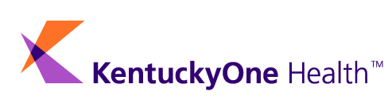

Work History
IT Technician, Olympic College
Duration: Aug 2023 - Present
- Offer comprehensive technical support, enhancing the college's IT infrastructure.
- Collaborate closely with faculty and students to resolve technical issues promptly.
- Implement and maintain hardware and software solutions to support academic operations.
- Conduct regular system maintenance and updates to ensure optimal performance.
Retail Associate/Jewelry Design/Jewelry Repair, Be Dazzled Beads - Land Of Odds
Duration: Jan 2018 - Mar 2020
- Engaged with customers to understand their needs, providing personalized recommendations.
- Designed and crafted custom jewelry pieces, turning creative ideas into tangible products.
- Conducted jewelry repairs with precision, restoring items to their original condition.
- Managed product displays and inventory, ensuring a visually appealing and organized store layout.
- Spearheaded social media marketing efforts, increasing brand visibility and customer engagement.

Data Center Associate, Wipro
Duration: Jun 2015 - Jun 2016
- Optimized data storage solutions, significantly improving data management efficiency.
- Played a crucial role in disaster recovery planning and execution, ensuring data integrity.
- Monitored and maintained virtual tape storage systems, enhancing data access and reliability.
System Analyst Team Lead, Dell Technologies
Duration: Jan 2007 - Jun 2013
- Directed a team dedicated to data center operations for a major healthcare account.
- Led a two-year project to upgrade mainframe infrastructure, boosting system performance and reliability.
- Developed comprehensive documentation for departmental operations, setting a standard for future processes.
- Maintained 24/7/365 data center operations, ensuring uninterrupted service and compliance with SLAs.

Data Center Associate, Jewish Hospital & St. Mary's HealthCare
Duration: Oct 1997 - Dec 2007
- Monitored and managed IBM Z10 mainframe operations, ensuring smooth and efficient data processing.
- Implemented and tested disaster recovery procedures, preparing the organization for potential data loss scenarios.
- Awarded the Ambassador Award for Performance in 2007, recognizing exceptional service and dedication.